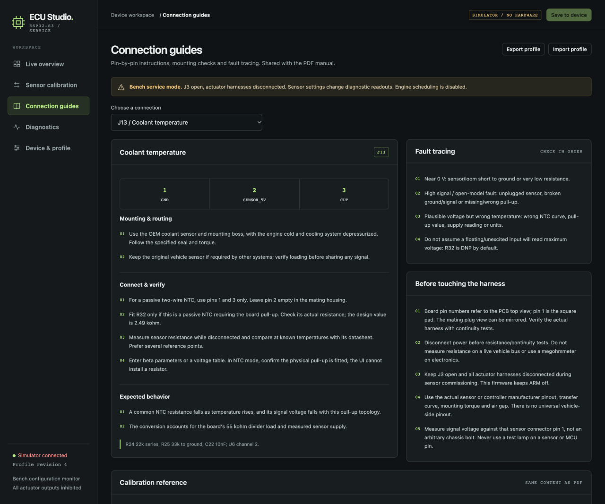
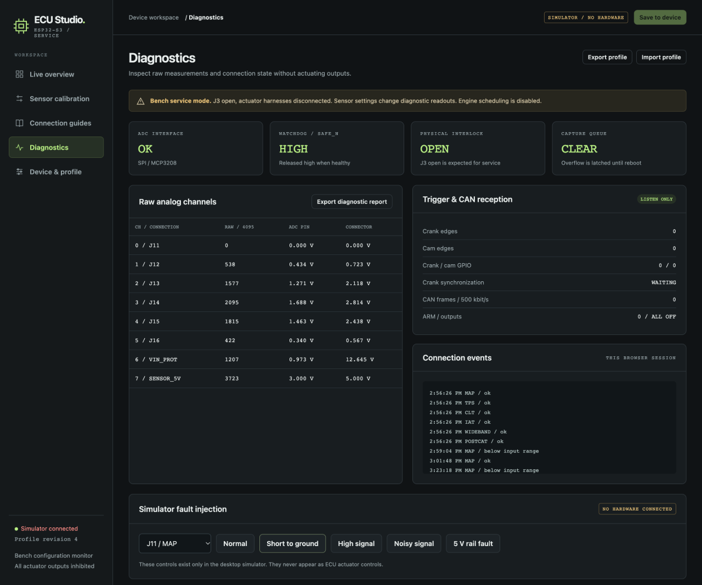
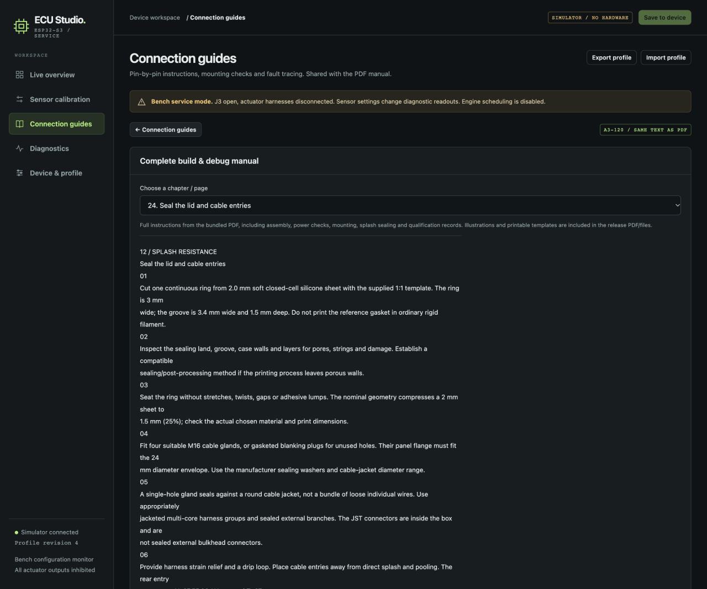
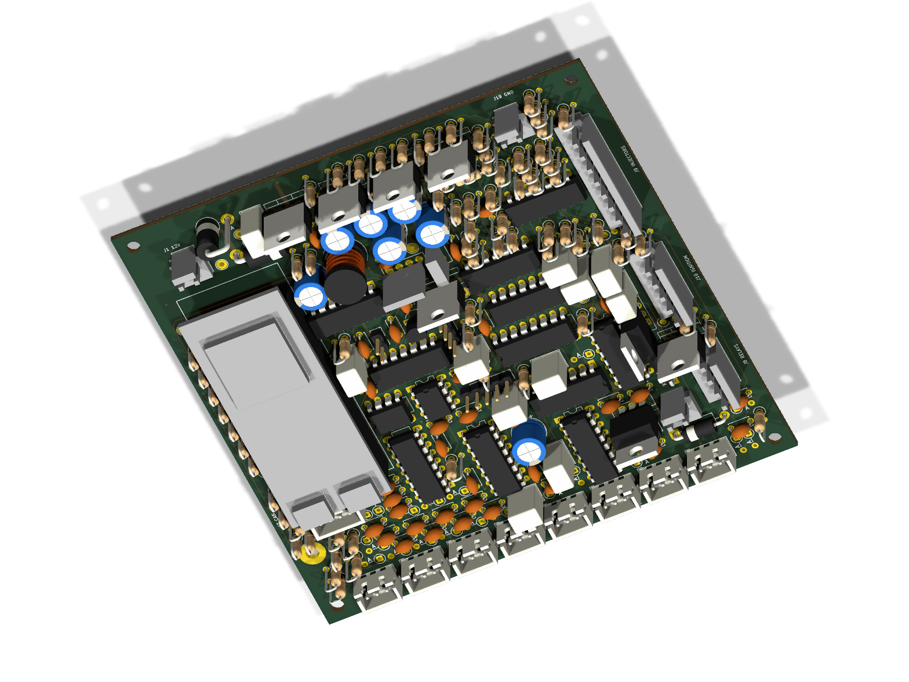
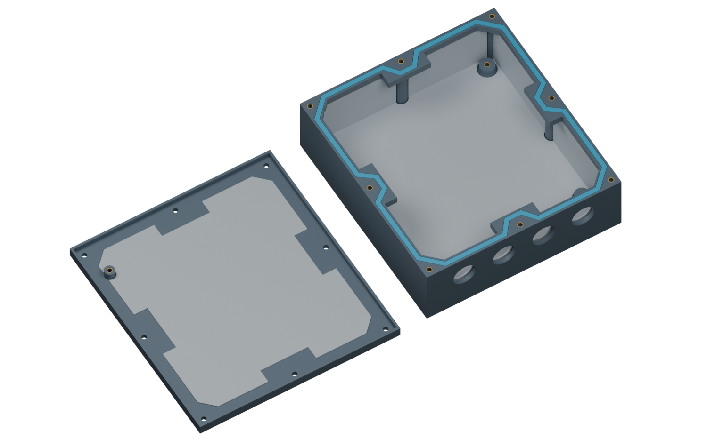

Working configuration UI using labelled simulator data. Calibrations, input limits and filters save as a persistent profile. Engine outputs remain off.

Per-connector mounting, pinout, electrical checks and fault tracing use the same guide source as the PDF.

Raw ADC, power rails, watchdog, interlock, trigger edges and CAN counts. This capture includes a simulated MAP signal short. Fault-injection controls exist only in the desktop simulator.

The full 26-page manual text is also available inside the configuration UI, including board assembly and splash-seal instructions.

Native KiCad render: 120 × 120 mm, six copper layers, plug-in S3 and ordinary leaded components. Some purchased parts use simplified assembly envelopes; DNP pull-ups are intentionally absent.

Matching printed case with PCB supports, eight lid screws, continuous gasket groove, gland openings and insulating covers. Nominal CAD checked; physical splash resistance remains untested.